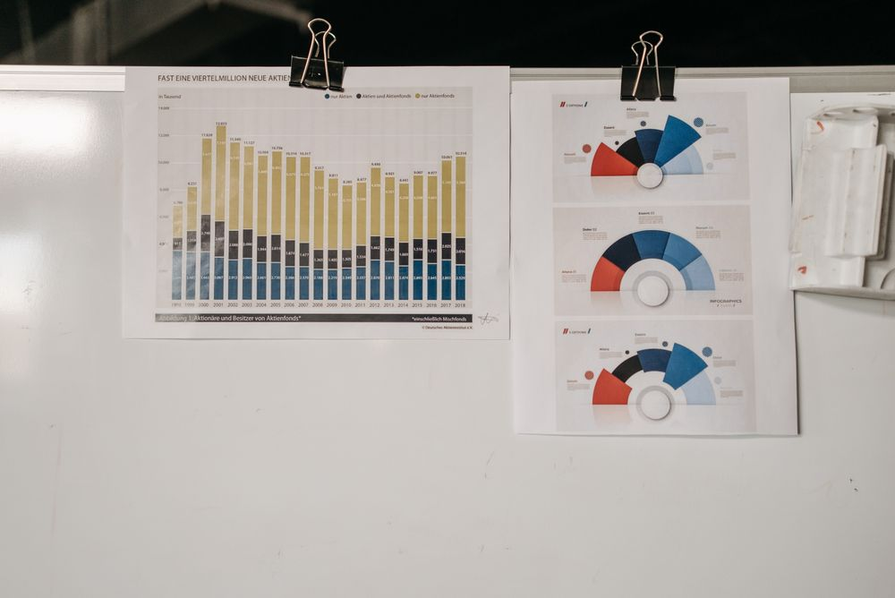

Your team repeats the same work.
Searching, summarizing, copying information and passing tasks between systems take attention away from higher-value work.
Every handoff adds another opportunity for delays and missed context.
AI DECISION SCIENCE CONSULTANT
I help founders, operations leaders and product teams identify useful AI opportunities and shape practical roadmaps, knowledge assistants and automated workflows around their business.
Start with one workflow, a business challenge or an AI idea.
A FOUNDATION ACROSS BUSINESS, DATA AND AI
Liverpool John Moores University
IIIT Bangalore
Searching, summarizing, copying information and passing tasks between systems take attention away from higher-value work.
Every handoff adds another opportunity for delays and missed context.
Reports, procedures and documentation exist. Finding the relevant information when someone needs it is another matter.
People repeat questions and spend time searching instead of acting.

A chatbot, an agent or a new platform all sound promising. It is harder to decide which solves a meaningful business problem.
Unclear data requirements and success criteria make the investment difficult to assess.
Connect business analysis, data science and AI implementation to understand what fits, what is ready and what to do next.
Assess the workflow, business objective, available data and constraints before choosing technology. Build a clearer picture of the opportunity, dependencies and next steps.
Shape assistants that retrieve relevant information around the questions your team asks, with source references and a plan for handling questions the system cannot answer.
Question
↓Relevant information
↓Answer + source
Connect suitable repeatable steps through AI agents, APIs and automation. Define approval points, human ownership and the measures that tell you whether the workflow is helping.
Input → AI-assisted task
Human approval checkpoint
Connected system → Outcome
Describe the problem, who experiences it and the outcome that matters.
A clear business objective.Review data, systems, constraints and the possible approaches.
A scoped recommendation.Where appropriate, validate a focused pilot against agreed criteria.
Evidence for the next decision.Implement the agreed scope, document the workflow and define how to measure it.
Clear limits and next steps.A career spanning technical documentation, data analytics and enterprise AI consulting brings both business and technical perspectives to the conversation.
Mumbai, India
View LinkedIn profile ↗Role responsibilities include identifying AI opportunities, developing roadmaps and working with business and technology stakeholders on Generative AI and intelligent automation.
Experience across Python, SQL, analysis and business reporting provides context for the data and workflows an AI solution depends on.
MSc Data Science — Liverpool John Moores University
Executive Postgraduate Programme, Data Science & NLP — IIIT Bangalore
Turn one business problem into a practical recommendation about what to build, what to validate and what needs to be ready first.
Custom quote Scope and deliverables agreed before work begins.
Book an AI Discovery Call ↗Discovery can stand alone. Any pilot or implementation is scoped separately.
Potential follow-on work: RAG knowledge assistants · AI agents & automation · Google Cloud integration · Data & KPI workflows
It is a useful starting point if you have a specific knowledge, workflow or automation challenge and want to assess how AI could help. You can begin with a problem rather than a fully written technical brief.
The assessment should help establish that. A simpler automation, better data foundation or workflow change may be more appropriate. The recommendation should follow the problem.
My background combines business analytics, data science and AI consulting, with exposure to Generative AI, agents and cloud technologies. I consider the business objective alongside the data and implementation requirements.
Timing depends on the use case, data readiness, integrations and approval requirements. Milestones and deliverables are agreed after the initial discussion.
Pricing follows the agreed scope. Discovery, a pilot and implementation can be separate engagements, with deliverables and commercial terms agreed before paid work begins.
We can discuss how the engagement fits your team, including responsibilities, access, review points and handover requirements.
Bring a short description of the workflow, current systems, the people involved and what a better outcome would look like. Agree how information will be handled before sharing confidential data.
Reliable claims require a defined use case, representative data and agreed evaluation. A prototype alone does not establish production performance or business returns. Those should be assessed through evidence.
LET'S START WITH THE PROBLEM
Share a business challenge, a repetitive process or an AI idea. Let's discuss what a useful next step could look like.
Connect on LinkedIn to discuss and arrange a call.
Explore the process →An initial conversation does not commit you to implementation.